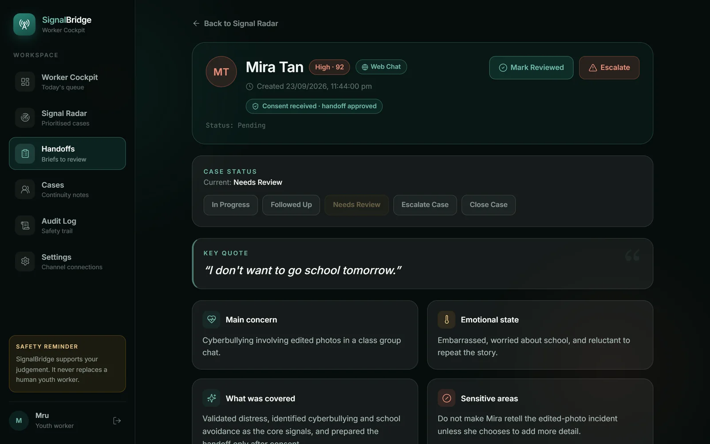

← All work01 of 06Dell InnovateDash 2026 · Champion
SignalBridge
Youth support that keeps the context, and asks before anything is shared.
A youth worker picks up a conversation that started somewhere else, and the context does not come with it. SignalBridge is a cloud-native, AI-assisted youth-support command centre built around support conversations, human handoff and consent.
- My role
- The youth-facing chat and consent flow, their API routes, and the Discord integration with its tests
- Result
- Dell InnovateDash 2026 — Champion
- Team
- Four Year 2 IT students
- Stack
- Next.js · FastAPI · PostgreSQL
- Partner
- Brief from Singapore Children’s Society
services/api/app/routes/conversations.py
GET /youth/conversationPOST /conversations/{conversation_id}/messagesPOST /handoffs/consentFrom my commit d1d654e. The team later reorganised the backend.
services/api/tests/test_production_alpha.py
def test_discord_thread_conversation_routes_to_safenight()def test_discord_public_intake_falls_back_when_youth_id_missing()Plus the migrations for Discord user and thread IDs.
What I built
The handoff
Five moments, and the judgement stays with the worker at every one.
- MessageA young person writes to SafeNight after hours, on the web, Telegram or Discord.
- SignalFixed rules flag the risk before any AI is involved. A model can improve the wording, never lower the risk.
- ConsentNothing is passed on until the young person agrees to the note.
- BriefSignalBridge drafts a structured handoff brief: context, risk, a key quote and a suggested first response.
- WorkerThe next morning the worker opens the brief instead of a cold thread, and decides what happens next.
My part
The side a young person sees, and one more way in.
SafeNight chat
The youth-facing Next.js screens: sign-in, the chat, the dashboard and past notes, connected to the FastAPI backend through conversation routes I added.
Consent before anything moves
The handoff preview, where the young person reads the note their worker will receive and agrees before it is shared.
SafeNight on Discord
A Discord bot, so SafeNight can be reached from an app young people already use: direct messages, or a thread of their own kept as one conversation.
Tests for the Discord intake
Automated tests that a thread message reaches SafeNight, and that a public message without a youth ID still opens a case a worker can see.
From my commits to the public SignalBridge repository. The backend, AI and deployment were teammates’ work.
Evidence
What it actually looks like.



Captured from the running app with its fictional demo data. No real young person appears anywhere.
Singapore Polytechnic’s feature calls the same event SP InnovateDash 2026.